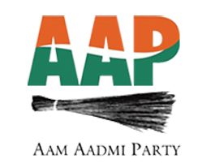

People complain that their leaders are corrupt but then they stay away from elections themselves. If we want a clean political system we will have to stand for elections ourselves and fight corruption. Ordinary people should enter politics if they want to change the system. This is why I have chosen to enter politics. I believe in the decentralisation of power. I don’t want to fight an election in order to become powerful. I want to give power back to the people.
The unequal distribution of resources in India, as well as collapse of public education is because ordinary people are not taken into consideration while laws are made. Those who make decisions on education or the distribution of wealth are people who do not understand the problems first hand. To change the system and address the most pressing problems of the country, decisions have to be made by people who understand the issues of the common man and face such problems themselves. Laws should be a reflection of people’s aspirations, something their elected representatives should understand. I feel I have a deep understanding of people’s problems.
India’s constitutions says that the country should work towards implementing the directive principals. However our government has ignored the directive principals. Through my work in the Aam Aadmi Party, I believe I can make the government work towards these principles